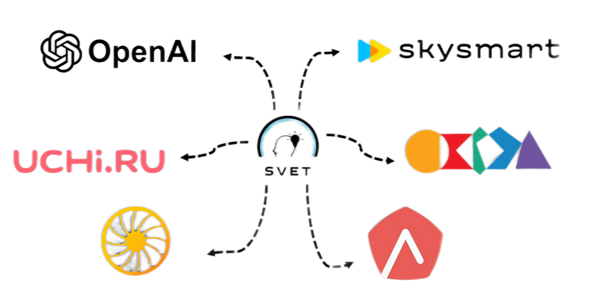

Приложение для школьников с встроенным голосовым помощником, базой учебных материалов, собственной нейронной сетью и режимом виртуального репетитора SvetTutor.
Концепция системы сервисов для образования SVET. Приложение имеет собственную нейросеть SvetAI, при помощи которой реализуется режим Tutor – виртуальный репетитор. Программа подберет задания, проверит выполненные задачи. В случае затруднений, Tutor даст необходимую теорию и несколько похожих задач для закрепления материала. Также система может помочь с подготовкой к экзаменам. При помощи нейросети для каждого ученика будет составляться индивидуальный план подготовки.
Новый виртуальный дневник содержит в строке домашних заданий ссылки на страницы учебников. Нажав на задание, программа откроет нужный материал.
Внутри приложения можно найти вкладки с подготовкой к олимпиадам, задания разных уровней.
Сейчас уже доступна бета-версия SVET.
Прототип приложения реализован на языке Python, интерфейс написан на Flat. Прототип является скелетом для создания более узконаправленных программ в будущем.
На данный момент программа способна управлять компьютером по командам пользователя. Примеры функций: поиск, создание и удаление файлов файлов, серфинг по интернету,
поиск человека по фамилии-имени в социальных сетях и статьях в интернете, отправление запросов в ChatGPT и озвучивание ответов, отключение и включение звука, отключение
программы или ПК и т.д.
Распознавание команд реализовано при помощи алгоритма Левенштейна, который позволяет распознать команду, даже если она была произнесена не совсем корректно.
